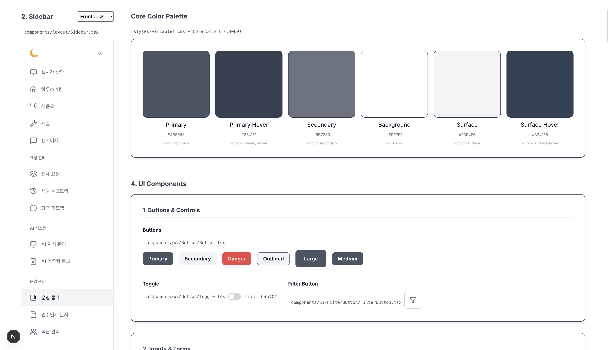

“AI와 사람의 협업으로 완성하는 스마트 호텔 오퍼레이션 플랫폼”
외국인 관광객 급증으로 언어 소통 애로
오탈자, 구어체, 모호한 표현의 요청들
단순 비품 요청부터 복잡한 예외 민원까지 혼재
업무 과부하
대면 응대와 동시에 객실의 수많은 무선 요청 수신
단체 카톡방을 통한 주먹구구식 배정 및 확인
요청 처리 상태 추적 불가, 교대 근무 시 정보 단절
문화체육관광부 발표 기준 역대 최대 규모 돌파 전망
1분기 기준 역대 최대 기록, 외국어 대응 수요 폭발
신규 공급 정체 속 기존 호텔의 객실 가동률 극대화 (JLL)
고용노동부 통계 기준 코로나19 이전 대비 대폭 감소
AHLA 2025 조사: 하우스키핑에 이어 프론트데스크 부족이 2위
"수요는 폭발적으로 늘었지만, 프론트 직원을 구하기가 매우 어렵다" (현장 인터뷰)
파편화된 수동 인계 프로세스
프론트의 핵심: 언어 이해 | 요청 분류 | 정보 전달 | 기록 → LLM AI의 최적 무대
언어 이해, 자동 분류, 즉각 전달, 실시간 이력 기록 등 정보 허브 역할 담당.
고객 요청 접수부터 부서 배정 및 직원 모바일 알림까지 실시간 즉시 완료.
전화/분류 등 기계적 업무에서 해방되어 고부가가치 대면 케어 서비스에 집중.
체크인(UUID-QR/JWT)부터 컨시어즈 음성 예약, 시설물 사진 분석, 오라우팅 보완, 다국어 번역 및 체크아웃 하드딜리트까지 호텔의 24시간을 담은 시연 영상을 전체화면으로 감상하세요.
"수건 2장만 가져다줘"
Vector & Graph RAG 검색
부서: 하우스키핑 | 비품: 수건
해당 부서 자동 Task 배정
Next.js Client (React)
iron-session 복호화 & Proxy
Hexagonal Core (POJO)
JPA Persistence Adapter

지속 선순환 피드백 루프 (AI Feedback Loop)
야간 · 피크타임 · 다국어 외래객 응대 · 단순 반복 문의를 AI가 24시간 실시간 자동 처리
남는 시간으로 체크인 병목 해소, 컴플레인 회복(Service Recovery), 업셀링, VIP 맞춤 응대 등 사람이 잘하는 고부가 업무에 리소스를 재배치
경청해 주셔서 감사합니다.